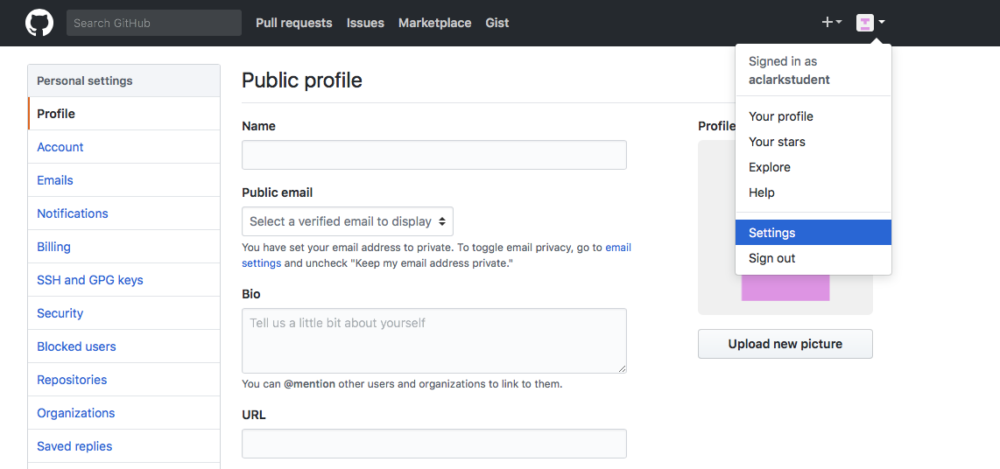
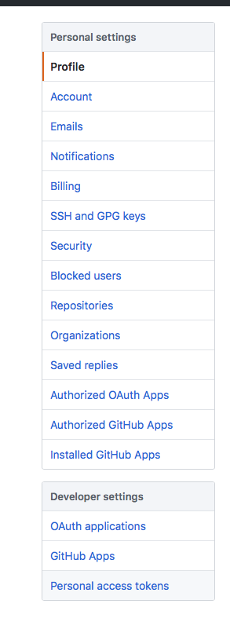
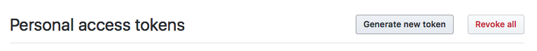
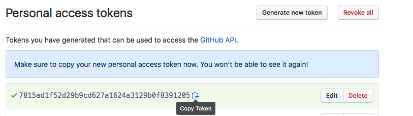
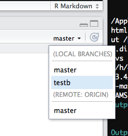

Github-related
Set up a github access token
This is necessary for using devtools::install_github()
to install private packages, such as your class assignments.
Go into your github account, click settings, and then developer settings:

Select personal access tokens:

Choose to generate a new token:

Generate a new token after naming the token something meaningful and checking the “repo” box:

The result will look something like this. Choose copy link and then paste it somewhere safe.

-
For example, to install the class R package, you will need the token as follows:
Branching and merging
A very useful reference for basic branching and merging can be found here
-
Create a new branch, from within the terminal
(replace
with a meaningful branch name, e.g. a1) -
Switch branch
- from terminal
- from within Rstudio

-
Delete a local branch (if you created one by accident, from terminal). Don’t do this to your master branch.
-
Push a branch to your remote GitHub repo
-
Delete a remote branch
-
Merge two branches
-
Restore a previous commit
There are multiple ways to do this, some more destructive than others. Perhaps the best way to do this is as follows:
The commit hash is the identifier that git assigns to a particular commit. You can find the hashes under RStudio’s git history dialog in the SHA column. If you want to reset your master branch to the state it was in under this older commit, then one way you could do it that would best preserve your work up that point would be to:
- create a new branch for the current master branch
- delete the files in master branch and commit that change
- merge the older branch back onto master, effectively restoring your master branch to the state it was in at the time of that older commit.
-
Push all commits to remote
Useful if you have multiple branches with commits that you have not yet pushed to GitHub. This does it all at once:
RStudio and GitHub
-
I can push and pull to my repo from the command line, but Rstudio’s git push and pull buttons are greyed out. How do I fix that? The answer can be found here. You can fix this and bring the buttons back to life if you do this, from the shell:
Note the -u flag. That should fix it.